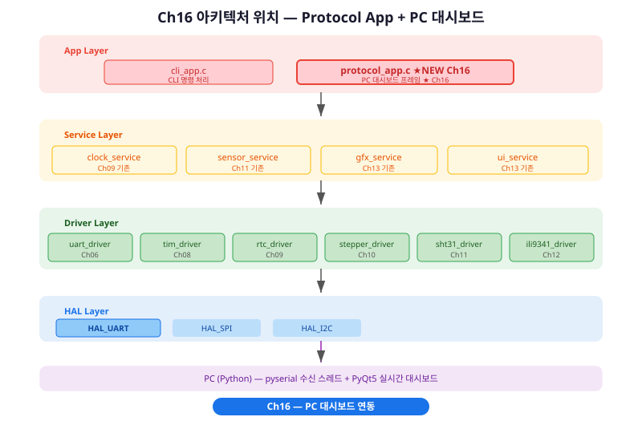
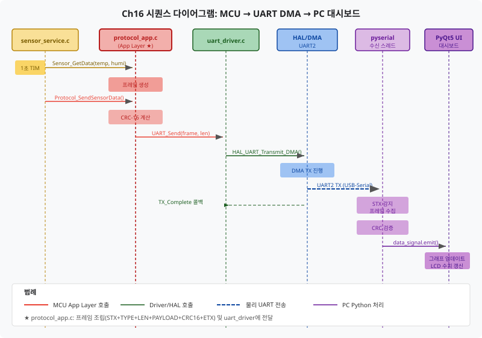
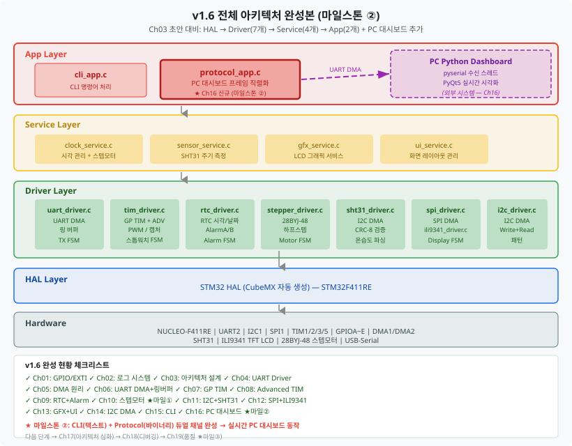

MCU가 직접 "말을 걸어오는" 바이너리 프레임 프로토콜을 설계하고, Python 대시보드가 실시간으로 온습도·시각·모터 상태를 화면에 그린다.
Ch15(CLI)까지 우리는 텍스트 기반 명령 채널을 완성했습니다.
Ch16에서는 동일한 UART 라인 위에 바이너리 프레임 채널을 추가합니다.
새로 추가되는 protocol_app.c는 App 레이어에 위치하며,
Driver 레이어의 uart_driver.c를 재사용합니다.

protocol_app.h가 상위(main 루프)에 노출하는 핵심 API입니다.
UART 버스 점유 여부는 내부에서 관리하므로 호출자는 반환 코드만 확인하면 됩니다.
/* protocol_app.h — 공개 인터페이스 요약 */
HAL_StatusTypeDef Protocol_Init(void);
HAL_StatusTypeDef Protocol_SendSensorData(float temp, float humi);
HAL_StatusTypeDef Protocol_SendTimeData(uint8_t hour, uint8_t min, uint8_t sec);
HAL_StatusTypeDef Protocol_SendMotorStatus(uint16_t angle, uint8_t state);
HAL_StatusTypeDef Protocol_SendSystemStatus(void);
uint16_t Protocol_CalcCRC16(const uint8_t *data, uint16_t len);
void Protocol_ProcessRxFrame(void);
1초 타이머가 만료되면 센서 데이터를 읽고, protocol_app이 프레임을 조립한 뒤 UART DMA로 전송합니다. PC의 pyserial 스레드는 STX를 감지해 프레임을 수집하고 CRC를 검증한 후 PyQt5 UI에 데이터를 전달합니다.

이 챕터를 완료하면 다음을 할 수 있습니다.
protocol_app.c의
프레임 직렬화 함수를 구현하고 PC에서 수신 데이터를 확인할 수 있다.
Ch15까지 우리는 UART를 텍스트로 사용했습니다.
time get을 입력하면 12:34:56\r\n이 돌아오는 방식입니다.
이 방식은 사람이 터미널에서 읽기 편하지만, Python 프로그램이 자동으로
파싱하기에는 불편합니다. 줄 끝 문자 처리, 숫자 문자열 변환, 오류 시
재동기 방법 등을 모두 직접 구현해야 하기 때문입니다.
임베디드 시스템에서 통신 프로토콜을 선택할 때는 세 가지 기준을 비교합니다: 파싱 복잡도, 오류 감지 능력, 대역폭 효율.
| 항목 | 텍스트 (CLI) | 바이너리 프레임 |
|---|---|---|
| 사람 가독성 | 높음 — 터미널에서 직접 확인 | 낮음 — 헥스 뷰어 필요 |
| 파싱 복잡도 | 높음 — 공백/줄바꿈 처리 필요 | 낮음 — 고정 오프셋 직접 접근 |
| 오류 감지 | 없음 (별도 구현 필요) | CRC-16으로 강력히 보호 |
| 대역폭 효율 | 낮음 — 숫자도 문자열로 전송 | 높음 — float 4바이트 그대로 전송 |
| 재동기 | 줄 끝 문자 기준 — 취약 | STX/ETX 스캔 — 강건 |
좋은 바이너리 프레임 설계는 세 가지 원칙을 따릅니다.
원칙 1 — 재동기 가능성: UART 노이즈로 바이트가 깨지면 수신 측이 다음 유효 프레임의 시작을 찾아야 합니다. STX(0xAA)와 ETX(0x55) 쌍으로 프레임 경계를 명시합니다. STX 값(0xAA)이 페이로드에 우연히 등장할 경우를 대비해 LEN 필드로 페이로드 끝 위치를 미리 알 수 있도록 설계합니다.
원칙 2 — 타입 구분: 하나의 UART 채널로 온도, 시각, 모터 상태 등 여러 종류의 데이터를 보냅니다. TYPE 필드(1바이트)로 수신 측이 페이로드를 어떻게 해석할지 결정합니다. 마치 HTTP의 Content-Type 헤더와 같은 역할입니다.
원칙 3 — 무결성 검증: UART 전송 중 비트 오류가 발생해도 수신 측이 감지할 수 있어야 합니다. CRC-16(16비트 순환 중복 검사)은 단순 합산 체크섬보다 훨씬 강한 오류 감지 능력을 제공합니다.
이 절에서는 실제 바이트 수준에서 프레임이 어떻게 생겼는지, 그리고 CRC-16이 무엇인지 살펴봅니다. CRC 수학 이론은 깊게 다루지 않습니다 — 계산 함수는 제공되며, "어떻게 쓰는가"에 집중합니다.
우리가 설계한 프레임의 바이트 구조는 다음과 같습니다.
/*
* 시리얼 프레임 구조 (총 6 + n 바이트)
* ┌──────┬──────┬──────┬─────────────┬─────────────┬──────┐
* │ STX │ TYPE │ LEN │ PAYLOAD │ CRC-16 │ ETX │
* │ 0xAA │ 1B │ 1B │ 0~32 B │ 2 B │ 0x55 │
* └──────┴──────┴──────┴─────────────┴─────────────┴──────┘
* ↑─────────────────────────────↑
* CRC 계산 범위: TYPE + LEN + PAYLOAD
*/
각 필드의 역할을 정리하면:
/* TYPE 0x01 — SENSOR_DATA (8바이트) */
/* float temp(4B) + float humi(4B) — IEEE 754, 리틀 엔디언 */
/* 예: 25.3°C = 0xC1CCCC41 → bytes[0..3] = {0x41, 0xCC, 0xCC, 0xC1} */
/* TYPE 0x02 — TIME_DATA (3바이트) */
/* uint8_t hour(1B) + uint8_t min(1B) + uint8_t sec(1B) */
/* 예: 14:30:05 → {0x0E, 0x1E, 0x05} */
/* TYPE 0x03 — MOTOR_STATUS (3바이트) */
/* uint16_t angle(2B, 리틀 엔디언) + uint8_t state(1B) */
/* 예: 2048 하프스텝, MOVING(1) → {0x00, 0x08, 0x01} */
/* TYPE 0x04 — SYSTEM_STATUS (6바이트) */
/* uint16_t version(2B) + uint32_t uptime_sec(4B) */
/* 예: v1.6, 업타임 120초 → {0x06, 0x01, 0x78, 0x00, 0x00, 0x00} */
CRC(Cyclic Redundancy Check, 순환 중복 검사)는 데이터의 비트 오류를 감지하는 수학적 방법입니다. Ch11에서 SHT31 센서 데이터 검증에 CRC-8(8비트)을 사용한 것을 기억하시나요? 이번에는 통신 프레임 보호용으로 더 강력한 CRC-16(16비트)을 사용합니다. 다항식이 다를 뿐 기본 원리는 동일합니다.
CRC-16/CCITT는 다항식 0x1021, 초기값 0xFFFF을
사용합니다. 아래 코드는 code_examples/ch16_protocol_app.c에
그대로 제공됩니다. 외울 필요 없습니다 — 복사해서 사용하세요.
동작 원리 이해를 원하는 분만 코드를 분석하세요.
/* protocol_app.c — CRC-16/CCITT 구현 */
uint16_t Protocol_CalcCRC16(const uint8_t *data, uint16_t len)
{
uint16_t crc = 0xFFFFU; /* 초기값 */
uint16_t i;
uint8_t j;
for (i = 0; i < len; i++)
{
crc ^= ((uint16_t)data[i] << 8); /* 데이터 바이트를 상위로 XOR */
for (j = 0; j < 8; j++)
{
if (crc & 0x8000U)
{
crc = (uint16_t)((crc << 1) ^ 0x1021U); /* 다항식 XOR */
}
else
{
crc <<= 1;
}
}
}
LOG_D("CRC16 계산 완료: len=%d 결과=0x%04X", len, crc);
return crc;
}
이 함수는 data 버퍼의 len 바이트에 대해
CRC를 계산합니다. 중요: CRC 계산 범위는
STX와 ETX를 제외한 TYPE+LEN+PAYLOAD입니다.
STX와 ETX는 항상 고정값(0xAA, 0x55)이므로 CRC에 포함해도
무의미하며, 관례적으로 제외합니다.
이제 실제 MCU 코드를 작성합니다. 이 절이 Ch16의 학습 핵심입니다 — Python 코드는 이미 완성되어 있지만, MCU 측 프레임 직렬화(Serialization)는 직접 구현해야 합니다.
모든 송신 함수가 공통으로 사용하는 내부 함수 build_frame()을
먼저 설계합니다. 이 함수는 타입, 페이로드를 받아 완성된 프레임 바이트
배열을 채우고 총 길이를 반환합니다.
/* protocol_app.c — 내부 프레임 조립 함수 */
static uint16_t build_frame(Proto_TypeDef type,
const uint8_t *payload, uint8_t payload_len,
uint8_t *out_frame)
{
uint16_t crc;
uint16_t idx = 0;
/* 1단계: STX */
out_frame[idx++] = PROTO_STX; /* 0xAA */
/* 2단계: TYPE */
out_frame[idx++] = (uint8_t)type;
/* 3단계: LEN */
out_frame[idx++] = payload_len;
/* 4단계: PAYLOAD 복사 */
if (payload != NULL && payload_len > 0)
{
memcpy(&out_frame[idx], payload, payload_len);
idx += payload_len;
}
/* 5단계: CRC-16 계산 및 삽입 (범위: TYPE + LEN + PAYLOAD) */
crc = Protocol_CalcCRC16(&out_frame[1], 2U + payload_len);
out_frame[idx++] = (uint8_t)((crc >> 8) & 0xFFU); /* 상위 바이트 먼저 */
out_frame[idx++] = (uint8_t)(crc & 0xFFU);
/* 6단계: ETX */
out_frame[idx++] = PROTO_ETX; /* 0x55 */
LOG_D("build_frame: type=0x%02X len=%d total=%d CRC=0x%04X",
(uint8_t)type, payload_len, idx, crc);
return idx; /* 완성된 프레임 총 바이트 수 */
}
float 값을 바이트 배열로 변환할 때 memcpy를 사용합니다.
캐스팅((uint8_t *)&temp)도 가능하지만,
엄밀한 C 표준 준수를 위해 memcpy가 선호됩니다.
/* protocol_app.c — 센서 데이터 전송 */
HAL_StatusTypeDef Protocol_SendSensorData(float temp, float humi)
{
uint8_t payload[8];
uint16_t frame_len;
/* float → 4바이트 직렬화 (리틀 엔디언, IEEE 754) */
memcpy(&payload[0], &temp, sizeof(float));
memcpy(&payload[4], &humi, sizeof(float));
LOG_D("Protocol_SendSensorData: temp=%.1f humi=%.1f", temp, humi);
frame_len = build_frame(PROTO_TYPE_SENSOR_DATA,
payload, 8, s_tx_frame);
/* TX 버스 점유 확인 */
if (UART_IsTxBusy())
{
LOG_W("Protocol_SendSensorData: TX 버스 중 — 이번 전송 건너뜀");
return HAL_BUSY;
}
s_frame_count++;
LOG_I("Protocol_SendSensorData: 프레임 #%lu 전송 (len=%d)",
s_frame_count, frame_len);
return UART_Send(s_tx_frame, frame_len);
}
main.c의 메인 루프에서 1초 타이머 플래그를 보고
각 데이터를 순서대로 전송합니다.
모든 전송을 동시에 하면 TX 버스 충돌이 발생하므로,
플래그 방식으로 분산 전송합니다.
/* main.c — 메인 루프 통합 예시 */
/* 전역 플래그 (TIM 인터럽트에서 설정) */
volatile uint8_t g_tick_1s = 0;
volatile uint8_t g_tick_10s = 0;
void HAL_TIM_PeriodElapsedCallback(TIM_HandleTypeDef *htim)
{
static uint32_t cnt = 0;
if (htim->Instance == TIM3)
{
cnt++;
g_tick_1s = 1;
if (cnt % 10 == 0) { g_tick_10s = 1; }
}
}
/* 메인 루프 */
while (1)
{
if (g_tick_1s)
{
g_tick_1s = 0;
float temp, humi;
RTC_TimeTypeDef t;
/* 센서 데이터 전송 */
Sensor_GetData(&temp, &humi);
Protocol_SendSensorData(temp, humi);
/* 시각 데이터 전송 (약간 지연해서 TX 충돌 방지) */
HAL_Delay(20);
HAL_RTC_GetTime(&hrtc, &t, RTC_FORMAT_BIN);
Protocol_SendTimeData(t.Hours, t.Minutes, t.Seconds);
/* 모터 상태 전송 */
HAL_Delay(20);
Protocol_SendMotorStatus(Stepper_GetPosition(), Stepper_GetState());
}
if (g_tick_10s)
{
g_tick_10s = 0;
Protocol_SendSystemStatus();
LOG_I("시스템 상태 프레임 전송 완료");
}
}
이 절은 코드 분석 수준입니다. Python 코드를 직접 작성하지 않아도 됩니다.
완성된 ch16_dashboard.py를 읽으면서 어떻게 동작하는지 이해합니다.
GUI 프로그램(PyQt5)의 메인 스레드는 화면 그리기와 버튼 클릭 처리를 담당합니다.
만약 메인 스레드에서 serial.read()를 호출하면
데이터가 올 때까지 메인 스레드가 멈추고 화면이 얼어붙습니다.
해결책은 시리얼 수신을 별도 스레드(QThread)로 분리하는 것입니다.
# ch16_dashboard.py — SerialReader 핵심 구조 (설명용 발췌)
class SerialReader(QThread):
frame_received = pyqtSignal(dict) # 완성 프레임을 GUI 스레드로 전달
def run(self):
"""스레드 시작 시 자동 호출 — 시리얼 수신 루프"""
with serial.Serial(self._port, self._baud, timeout=0.1) as ser:
while self._running:
data = ser.read(64) # 최대 64바이트씩 읽기
for byte in data:
frame = self._parser.feed(byte) # 1바이트씩 파서에 전달
if frame is not None:
self.frame_received.emit(frame) # 시그널 발행
핵심 흐름: ser.read() → FrameParser.feed() → 완성 시 시그널 발행.
시그널-슬롯 메커니즘이 스레드 간 안전한 데이터 전달을 보장합니다.
Python의 FrameParser는 MCU 측의 build_frame()과
정확히 역방향 동작입니다. 5개 상태를 가진 FSM(유한 상태 머신)으로
구현되었습니다.
# ch16_dashboard.py — FrameParser 상태 전이 요약
# STATE_HUNT_STX → STX(0xAA) 수신 시 STATE_HEADER로
# STATE_HEADER → TYPE + LEN 2바이트 수집 후 STATE_PAYLOAD/CRC로
# STATE_PAYLOAD → LEN 바이트 수집 완료 시 STATE_CRC로
# STATE_CRC → CRC 2바이트 수집 후 STATE_ETX로
# STATE_ETX → ETX(0x55) 확인 + CRC 검증 → 완성 프레임 반환
완성된 ch16_dashboard.py를 실행하고,
필요에 따라 화면 구성을 커스터마이징합니다.
이 절에서는 코드 수정 없이 실행하는 방법과,
간단한 UI 수정 방법을 다룹니다.
# Python 3.9 이상 권장 (3.12 지원 확인)
# 가상 환경 생성 (선택 사항, 권장)
python -m venv stm32_env
stm32_env\Scripts\activate # Windows
# 필수 패키지 설치 (버전 고정 — 호환성 확인된 조합)
pip install pyserial==3.5 PyQt5==5.15.9 pyqtgraph==0.13.3
# COM 포트 확인 후 실행 (Windows 장치 관리자에서 확인)
python code_examples/ch16_dashboard.py --port COM3 --baud 115200
# Linux/Mac
python code_examples/ch16_dashboard.py --port /dev/ttyUSB0 --baud 115200
실행 시 다음 세 영역이 표시됩니다.
# ch16_dashboard.py 수정 예시 — 표시 범위 변경
# 1. 그래프 히스토리 길이 변경 (기본 60포인트)
GRAPH_HISTORY = 120 # 2분으로 변경
# 2. Y축 범위 고정 (자동 스케일 대신)
self._plot.setYRange(0, 100) # 습도 0~100%
# 3. 색상 변경
self._curve_temp = self._plot.plot(
pen=pg.mkPen("#FF6B35", width=3), name="온도 (°C)")
드디어 v1.6에 도달했습니다. Ch03에서 "초안"으로 그렸던 아키텍처가 이제 19개 챕터의 절반을 지나 완전한 형태를 갖췄습니다. 이 절에서는 Ch03 초안과 v1.6 최종본을 비교하며, 무엇이 어떻게 추가되었는지 레이어별로 정리합니다.

| 레이어 | Ch03 초안 | v1.6 최종 | 추가된 챕터 |
|---|---|---|---|
| App | main.c 단독 | cli_app.c + protocol_app.c | Ch15, Ch16 |
| Service | 없음 | clock_service, sensor_service, gfx_service, ui_service | Ch10, Ch11, Ch13 |
| Driver | uart_driver 1개 | uart, tim, rtc, stepper, sht31, spi, ili9341, i2c (7개) | Ch04~Ch14 |
| HAL | 자동 생성 | 자동 생성 (변경 없음) | — |
| PC 연동 | 없음 | pyserial + PyQt5 대시보드 | Ch16 |
v1.6 시스템이 동시에 동작하는 기능 목록입니다.
목표: protocol_app.c를 구현하고 Python 대시보드에서 실시간 데이터 수신을 확인한다.
환경: STM32CubeIDE, NUCLEO-F411RE, Python 3.9+, pyserial + PyQt5
code_examples/ch16_protocol_app.h와
ch16_protocol_app.c를
STM32CubeIDE 프로젝트의 App/ 폴더에 복사합니다.
main.c에서 #include "protocol_app.h"를 추가합니다.
Ch06에서 구현한 UART_Send()를 그대로 재사용합니다.
새로 작성할 UART 코드는 없습니다 — Protocol_Init()만 호출하면 됩니다.
/* main.c — MX_xxx_Init() 이후 */
Protocol_Init();
LOG_I("v1.6 프로토콜 앱 초기화 완료");
/* main.c — while(1) 루프 내 */
if (g_tick_1s)
{
g_tick_1s = 0;
float temp = 25.3f, humi = 60.1f; /* 실제: Sensor_GetData(&temp, &humi) */
Protocol_SendSensorData(temp, humi);
LOG_D("센서 프레임 전송 완료");
}
python code_examples/ch16_dashboard.py --port COM3 --baud 115200
예상 결과:
STM32CubeIDE 로그 출력 예시:
[INFO ] v1.6 프로토콜 앱 초기화 완료
[DEBUG] Protocol_SendSensorData: temp=25.3 humi=60.1
[DEBUG] build_frame: type=0x01 len=8 total=14 CRC=0xA3C2
[INFO ] Protocol_SendSensorData: 프레임 #1 전송 (len=14)
[DEBUG] Protocol_SendSensorData: temp=25.3 humi=60.2
[INFO ] Protocol_SendSensorData: 프레임 #2 전송 (len=14)
[STX][TYPE][LEN][PAYLOAD][CRC16][ETX]에서
LEN 필드는 수신 측이 페이로드 끝을 알고 재동기하는 핵심 역할을 합니다.
build_frame()은 6단계(STX → TYPE → LEN → PAYLOAD → CRC → ETX)로
프레임을 조립합니다. CRC 계산 범위는 TYPE+LEN+PAYLOAD입니다.
memcpy(&payload[0], &temp, sizeof(float))로
플랫폼 독립적으로 처리합니다 (캐스팅 대신 memcpy 권장).
FrameParser는 MCU build_frame()의
역함수입니다. 5개 상태 FSM으로 바이트 스트림에서 프레임을 복원합니다.
이 챕터 완료 후 전체 아키텍처에 protocol_app.c가 추가되어
v1.6 마일스톤 ②가 달성되었습니다.
이제 MCU는 CLI(텍스트)와 Protocol(바이너리) 두 개의 통신 채널을
동시에 운용합니다.
build_frame() 함수를 호출하여 생성한다고 가정할 때,
출력 버퍼의 처음 6바이트 값을 16진수로 나열하시오.
(CRC 계산 결과는 임의값 0xABCD라고 가정)
err 카운터가 급격히 증가하고 있다.
가능한 원인 3가지를 열거하고, 각각을 어떻게 진단할지 서술하시오.